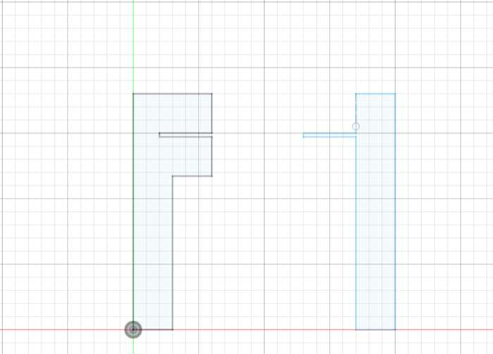
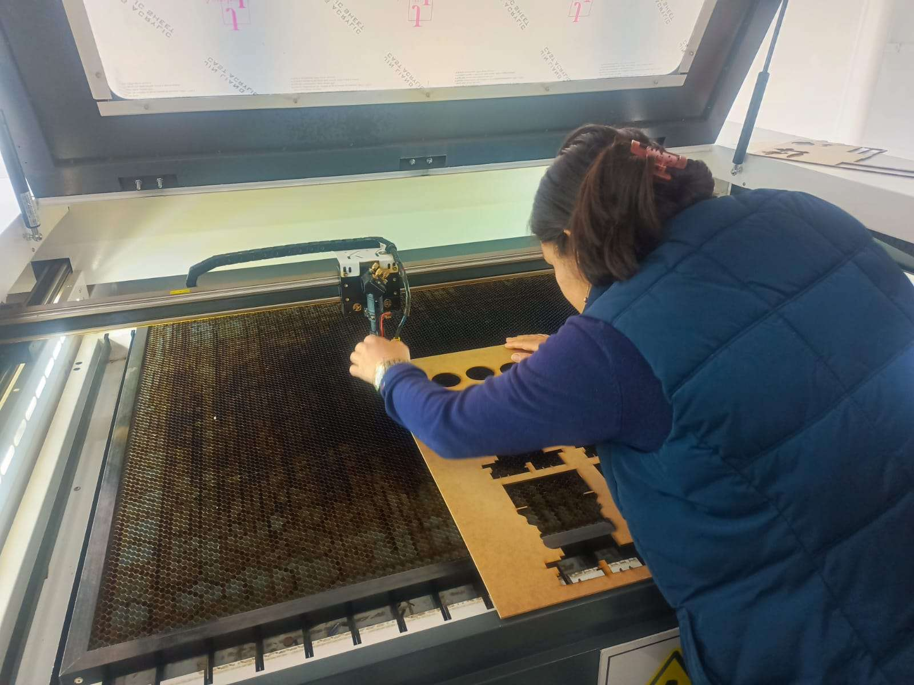
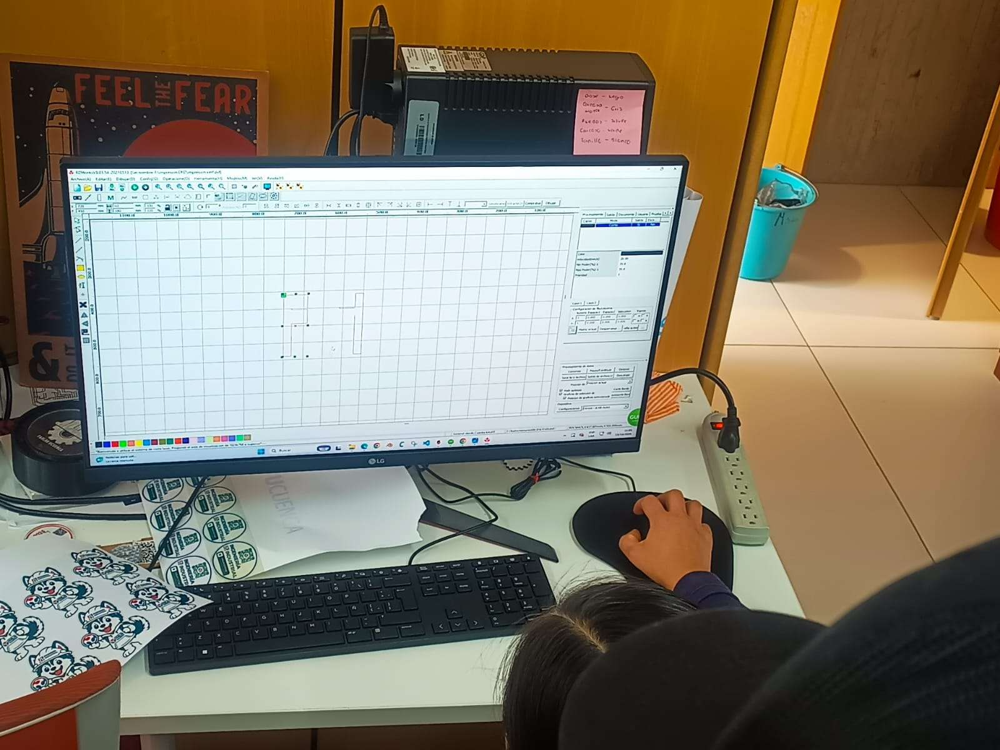
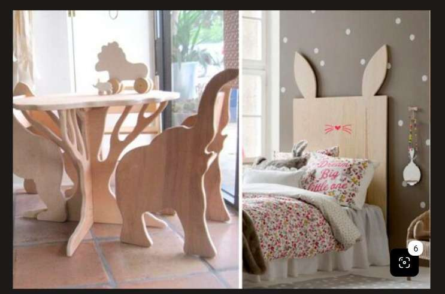
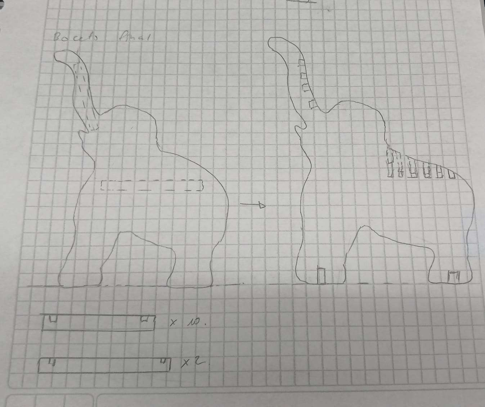

Week 04
Computer-Controlled Cutting - Parametric design, laser cutter and press-fit chair design
Introduction
This week we worked on computer-controlled cutting. We learned to draw parametric 2D sketches in Autodesk Fusion, to prepare files and operate the laboratory laser cutter, and we started designing a chair built as a press-fit kit: flat pieces cut on the laser cutter that are assembled by slotting into each other, without nails or screws.
The three parts of the week are connected: parameters let the joints adapt to the real thickness of the material, the laser cutter turns the 2D drawing into physical pieces, and the chair is the project where we apply both ideas.
1. Parametrization in Autodesk Fusion
Sketches that update by themselves
In this first part we worked with parametrization in Autodesk Fusion. On the sketch grid we drew two pieces that fit into each other: an "F"-shaped piece with a horizontal slot and a vertical bar with a protruding tab.
The most important points:
- Automatic dimensions: instead of fixed measurements we use parameters (variables). If the material thickness changes (for example, from 3 mm MDF to 6 mm), the width of the slot and of the tab updates by itself throughout the drawing.
- Exact fit: we make sure the shapes are completely closed (shaded light blue) and use fixed right angles, so that once cut they fit by pressure without being loose.
- Ready to export: once the 2D sketch is ready in Fusion, it is saved as a vector file (.dxf) to take it directly to the laser cutter software.

2. Using the Laser Cutter
From the DXF file to the cut MDF board
We were shown how the laboratory laser cutter works and how to prepare our files in RDWorks V8 before cutting MDF boards.
The most important points:
- Setup in the software (RDWorks V8): we open the .dxf design of our pieces, check the size on the grid and configure the Cut layer, adjusting two key values according to the wood thickness: speed (how fast the laser moves) and power (the strength of the laser shot).
- Avoiding burnt edges: with too much power or too little speed the MDF edge burns excessively; if power is lacking, the piece is not completely cut through.
- Physical preparation on the machine: we placed the MDF board on the honeycomb table, calibrated the height of the laser head above the material and ran cutting tests, checking that the pieces came off cleanly.
| Parameter | Effect |
|---|---|
| Speed | Too slow burns the edge; too fast does not cut through. |
| Power | Too high burns the MDF; too low leaves the piece attached. |
| Head height | Calibrated over the material so the beam is focused on the surface. |
| Work table | Honeycomb panel that holds the board and lets the cut pass through. |


3. Idea and Sketch for a Chair (Press-Fit)
An elephant chair built from flat pieces
We worked on brainstorming and design to build a chair. The goal is to move our sketch to Autodesk Fusion and build it as a press-fit kit (flat laser-cut pieces that are assembled by slotting into each other without nails or screws).
The most important points:
- Reference idea (elephant chair): we chose a wooden children's chair whose sides have the silhouette of an elephant: the legs are the base, the curved back forms the seat and the raised trunk works as the backrest.
- 2 elephant-shaped sides: in our "final sketch" in the notebook the sides have slots along the seat curve, slots in the trunk area (backrest) and slots at the bottom of the legs.
- Short boards or slats: they have notches at the ends and fit between the two side elephants to form the whole surface where one sits and leans.
- Long lower crossbars: they fit into the slots of the front and rear legs to give firmness to the base and keep the chair from moving sideways.


Tools and Equipment
- Design: Autodesk Fusion (parametric 2D sketch, .dxf export)
- Laser cutter control software: RDWorks V8
- Machine: laboratory laser cutter with honeycomb table
- Material: MDF boards
Conclusion
This week we saw how a design goes from the screen to a physical piece. With parameters in Fusion the joints depend on the material thickness, so the same drawing can be reused with another board; with the laser cutter and RDWorks V8 we learned that speed, power and head height decide whether the cut is clean or burnt; and with the elephant chair sketch we planned a press-fit structure of two sides, slats and crossbars.
The main lesson is that a good press-fit design depends on precise measurements and on knowing the machine and the material. The next step is to draw the chair in Fusion with parametric slots, cut a test and adjust the fit before cutting the final pieces.
Bibliography
- Autodesk. (2026). Autodesk Fusion Help: Parameters and sketch constraints. Autodesk Inc. help.autodesk.com/view/fusion360
- Fab Academy. (2026). Computer-Controlled Cutting: weekly class and assignment. Fab Academy. fabacademy.org
- Gershenfeld, N. (2005). Fab: The Coming Revolution on Your Desktop—From Personal Computers to Personal Fabrication. Basic Books.
- Ruida Technology. (n.d.). RDWorks V8 user manual. Laser control software documentation.
- Industrial FabLab Ucuenca. (2026). Class material, Week 04: parametrization, laser cutter and press-fit design. Universidad de Cuenca.